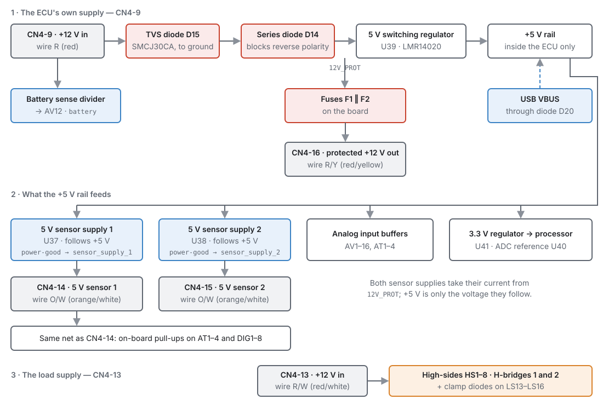
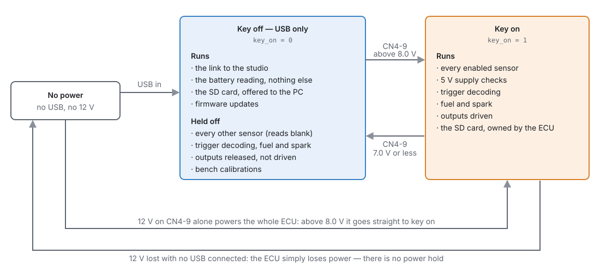
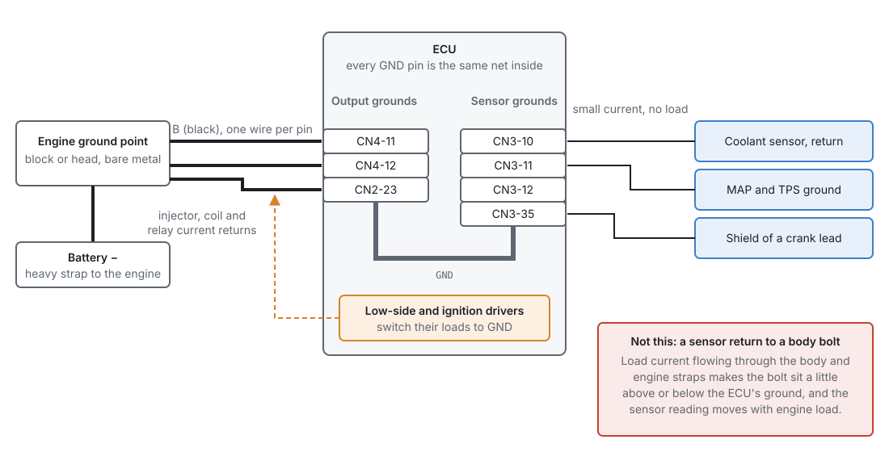
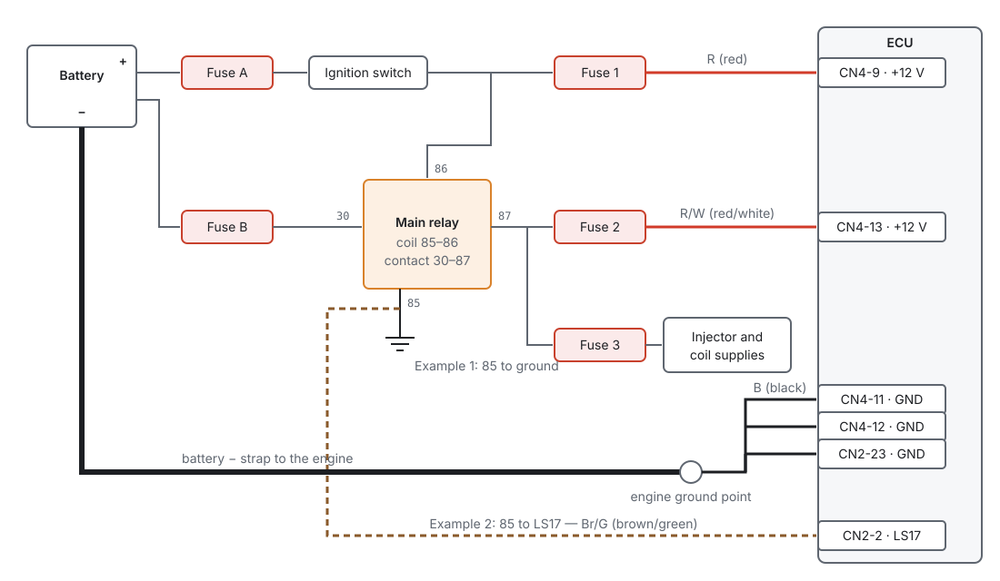
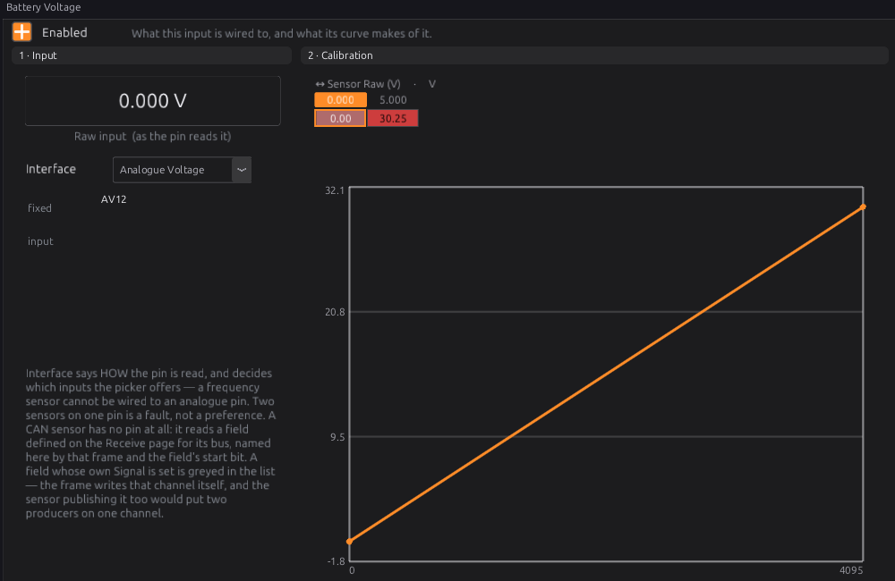
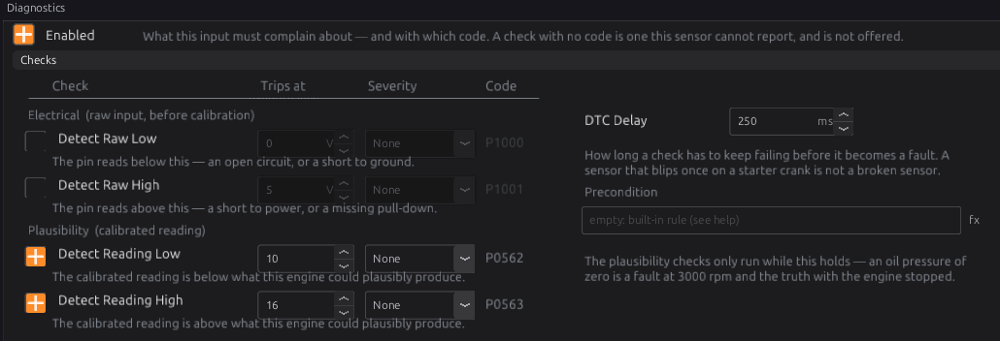
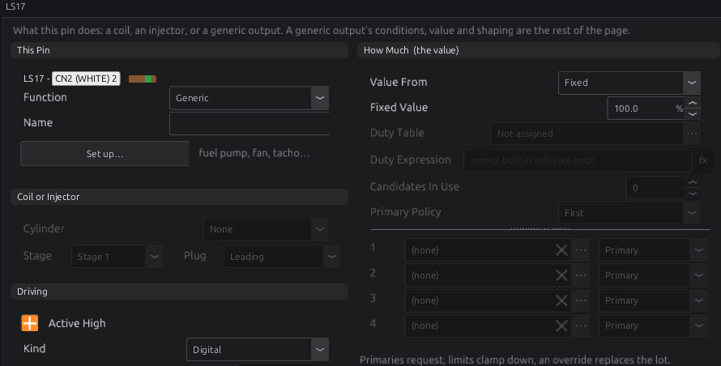

Power, grounds and protection¶
Basic → Advanced
In one sentence: how the ECU is powered, how it decides the key is on, where its grounds go, what protects it, and how to wire all of that so every sensor reading and every injector pulse can be trusted.
Overview¶
Basic
Most ECU faults that look like tuning problems are really power or ground problems. A sensor reading that moves when the fan switches on, an idle that goes rich when the battery is low, an engine that dies while cranking: each can come from a bad ground or a poor supply, not from a bad table.
This chapter covers the wiring that everything else rests on:
- The supplies. The jaytek_v1 has two 12 V inputs. CN4-9 powers the ECU itself, and tells it whether the key is on. CN4-13 powers the high-side outputs and the H-bridges, and is meant to come from a main relay.
- Key-on and USB power. The ECU can run from USB alone, with the key off, for tuning and firmware updates. It behaves very differently then, on purpose.
- Grounds. Seven ground pins, one ground inside the ECU, and where each wire should go.
- Protection. What the board protects against by itself, and what your fuses and relays must handle.
- The 5 V sensor supplies. Two regulated 5 V outputs for sensors, each watched by the ECU.
You need this chapter before you wire anything. Chapter 9 covers wiring practice in general (wire sizes, routing, crimping); this chapter covers the supply and ground wires in particular. Chapter 7 lists every pin.
Disconnect the battery first
Disconnect the battery negative before you wire any supply. A shorted supply wire can melt insulation or start a fire long before a fuse you forgot to fit would have blown.
Concepts¶
Intermediate
The power pins¶
All the power pins are on CN4, the black 23-way connector. Wire colours are the ones in the board's harness definition.
| Pin | Name | Wire | What it is |
|---|---|---|---|
| CN4-9 | +12 V in | R (red) | The ECU's own supply, and the voltage it reads as Battery Voltage. Feed it from an ignition-switched, fused source. |
| CN4-13 | +12 V in, main relay feed | R/W (red/white) | Supply for the high-side outputs HS1–HS8 and the two H-bridges. Feed it from the main relay. |
| CN4-16 | Protected +12 V out | R/Y (red/yellow) | A fused 12 V output taken from the ECU's own supply. |
| CN4-14 | 5 V sensor supply 1 | O/W (orange/white) | Regulated 5 V for sensors. |
| CN4-15 | 5 V sensor supply 2 | O/W (orange/white) | Regulated 5 V for sensors. |
| CN4-11, CN4-12 | Ground | B (black) | Ground. |
The other ground pins are CN2-23 (on the white connector) and CN3-10, CN3-11, CN3-12 and CN3-35 (on the blue connector).
Inside the ECU: the power tree¶

Follow CN4-9 from the left of Figure 10.1:
-
The battery sense divider is tapped straight off the pin, before any protection. It scales the pin voltage down for the processor's input AV12. The studio shows it as the Battery Voltage sensor, and its calibration reads 0–30.25 V across the input's full range.
-
A TVS diode (D15, an SMCJ30CA) sits from the pin to ground. It does nothing at normal voltages. When a spike on the supply rises above its 30 V stand-off voltage, it conducts and clamps the spike.
- A series diode (D14) lets current flow only into the ECU. If the supply is connected backwards, it blocks, and the ECU's own electronics are not powered at all.
-
After the diode is the ECU's protected 12 V, called
12V_PROTon the schematic. It feeds a 5 V switching regulator (U39), which makes the ECU's internal +5 V rail. A 3.3 V regulator (U41) runs the processor from that rail. -
12V_PROTalso goes, through two small fuses on the board (F1 and F2, in parallel), to CN4-16, the protected 12 V output. This output is live only while CN4-9 is powered.
USB is the other way into the +5 V rail: the USB supply feeds it through its own diode (D20). That is why the ECU runs, and talks to the studio, with only a USB cable connected.
CN4-13 is separate. It goes to the supply pins of the four-channel high-side drivers that make HS1–HS8 and to both H-bridges. Nothing else in the ECU uses it, and the ECU does not measure it. (The schematic also joins it to diode footprints D10–D13 on LS13–LS16; those diodes are never fitted.)
Two supplies, and why¶
CN4-9 is the ECU's brain supply. It is small, it must be clean, and it tells the ECU the key is on. CN4-13 is the muscle supply for the outputs that switch 12 V to a load. Keeping them apart means you can switch the heavy loads with a relay while the ECU's own supply stays on its own wire and fuse.
Low-side outputs (injectors, coils, most solenoids) do not take their power from the ECU at all. They switch the load's ground. The load's positive side comes from your own fused supply, usually the main relay (Figure 10.4).
How the ECU decides the key is on¶
There is no separate ignition-sense pin. The ECU decides the key is on from the voltage it measures on CN4-9, with hysteresis:
- the key turns on when the measured battery voltage rises above 8.0 V;
- once on, it turns off only when the voltage falls to 7.0 V or below.
The result is published as the channel Key On key_on, 1 for on and 0 for off.
This is why CN4-9 must be ignition-switched. On a permanent battery feed the ECU would always think the key was on.

With the key off (USB power only, or CN4-9 too low), the ECU deliberately does very little:
- It reads only the battery. Every other sensor is skipped, and its channel reads blank rather than a number. The studio shows a KEY OFF strip above the toolbar to say so, so a row of zero gauges is not mistaken for a row of dead sensors.
- It ignores the trigger inputs: no sync, no RPM.
- It schedules no fuel and no spark, not even a prime pulse.
- Every generic output is released, not driven, so a bench tune cannot run a fuel pump or a fan.
- Engine-stopped calibrations that move a motor or read a sensor (throttle and pedal calibration, for example) refuse to run.
- The SD card is handed to the PC as a USB drive once the ECU has finished any write in progress.
- Active runtime trouble codes are marked no longer active. Their history stays stored.
Why the sensors are not read on USB power
On USB power the ECU's internal 5 V rail is fed through a diode, so it sits lower than it does with 12 V connected. The firmware's own notes say this shifts the sensor readings: the numbers would look plausible but would not match the running engine. A calibration built from them would be wrong. So the firmware leaves those channels blank until the key is on.
Firmware updates work the other way round. The studio updates firmware only with the key off and the engine stopped, the ECU on USB power alone. If it sees the key on or the engine turning, it stops and changes nothing (chapter 46).
The key turns off at 7.0 V, even while cranking
If the voltage at CN4-9 drops to 7.0 V or below during cranking, the ECU treats the key as off. It stops scheduling fuel and spark and drops sync, and it does not turn back on until the voltage rises above 8.0 V. A weak battery, a long thin feed wire or a poor ground can do this. Measure CN4-9 while cranking if an engine cranks but will not fire.
There is no power hold¶
The ECU cannot keep itself powered after the key is turned off. With no USB connected, turning the key off removes CN4-9 and the ECU stops at once. The firmware is written for this:
- your tune is saved when you Burn, not at key-off. It is written to the spare one of two flash banks, so a save cut short leaves the previous tune intact;
- learned data (long-term fuel trim and the other learned tables) is written to the SD card about every 30 seconds when it has changed, and again when the engine stops while the ECU is still powered. Turning the key off loses at most the learning since the last save.
The 5 V sensor supplies¶
The ECU gives you two regulated 5 V supplies for sensors: CN4-14 (supply 1) and CN4-15 (supply 2). Each comes from its own tracking regulator (U37 and U38). A tracking regulator makes an output that follows a reference, here the ECU's internal +5 V rail, while it takes its current from the protected 12 V. So the sensors are fed from the same 5 V the ECU measures against, and a short on a sensor's 5 V wire loads that regulator, not the ECU's own rail.
Supply 1 also feeds, inside the ECU, the pull-up resistors on the four temperature inputs AT1–AT4 and the eight digital inputs DIG1–DIG8. A fault on CN4-14 therefore affects those inputs too, even if nothing on them is wired to CN4-14.
Each regulator has a power-good line to the processor. It is high while that supply is in regulation and goes low if the supply fails, for example from a short to ground. With the key on, the firmware reads both lines:
- They are published as 5V Sensor 1 Supply
sensor_supply_1and 5V Sensor 2 Supplysensor_supply_2, showing OK or Fault. - The moment either line reads Fault, every sensor read from an ECU pin is marked invalid, not only the sensors on that supply. The ECU is not told which supply each sensor is wired to, so it does not guess. The battery, the on-board sensors and CAN sensors carry on.
- If the line stays low for 100 ms, the ECU raises P0641 (supply 1) or P0651 (supply 2), at severity level 2. The code heals when the line comes back.
With the key off, the power-good lines are not read at all, and these channels stop updating.
The 5 V supplies are for sensors only
Use CN4-14 and CN4-15 for sensor references: pressure sensors, throttle and pedal sensors, Hall-effect sensors that want 5 V. Do not use them to power lamps, relays or other controllers. Their current rating is not yet published in the board's specifications, and a supply that drops out of regulation takes every sensor on the ECU with it.
Grounds¶
Every ground pin on the jaytek_v1 is the same ground net inside the ECU. There is no separate "sensor ground" circuit on the board. But the pins are grouped by connector, and the grouping tells you how to use them.

- Output grounds: CN4-11, CN4-12 and CN2-23. The low-side and ignition drivers switch their loads to the ECU's ground, so the current of every injector, coil and relay on those outputs comes back through the ECU and out on these pins. Run a separate black wire from each pin to one clean ground point on the engine, the same point the battery negative strap goes to.
- Sensor grounds: CN3-10, CN3-11, CN3-12 and CN3-35. These sit on the blue sensor connector. Return every sensor's ground here, and nowhere else. Terminate cable shields here too, at the ECU end only (chapter 11).
The rule behind this is simple. A sensor reports a voltage measured against the ECU's ground. If the sensor's own ground is somewhere else, any voltage between that point and the ECU's ground is added to the reading. Current flowing in the engine and body straps makes such a voltage, and it changes with load. A sensor returned to the ECU's own ground pins has no such error.
One ground point, short and thick
Put the ECU's output grounds and the battery negative strap on the same bare-metal point on the engine. Every ground between the battery and the ECU is a place for a voltage drop to hide.
What the board protects, and what it does not¶
| Threat | Protected on the board? | What you must do |
|---|---|---|
| Spikes on CN4-9 | Yes, clamped by the TVS diode D15 | Nothing extra, but keep the feed short and fused. |
| Battery connected backwards, at CN4-9 | Yes, the series diode D14 blocks it | Check polarity anyway: see the next row. |
| Battery connected backwards, everything else | No. CN4-13 and the outputs are not behind D14 | Check polarity before you connect the battery. |
| A short on CN4-16 | Yes, two fuses on the board | Keep loads on CN4-16 small; the board fuses protect the board, not your wiring. |
| A short on CN4-9 or CN4-13 wiring | No fuse on the board | Fit your own fuse in each feed, close to the source. |
| A short on a 5 V sensor supply | Detected (power-good line, P0641/P0651) | Find and fix the short; every pin sensor reads invalid until you do. |
The fuses on the board are not your fuses
F1 and F2 are small surface-mount fuses soldered to the board. They protect the board's tracks behind CN4-16. They are not easy to replace, and they do nothing for CN4-9, CN4-13 or any wire in your harness. Every supply wire needs its own fuse at the source end.
Procedure¶
Basic → Intermediate
This is the order to wire and check the supplies and grounds. Do it before you wire sensors and outputs, and before the first power-up.
1 · Plan the supplies¶
Decide how the main relay will be switched (see Examples): by the ignition switch, or by the ECU. Draw your own version of Figure 10.4, with a fuse in every feed.

2 · Wire the grounds first¶
- Choose one clean, bare-metal ground point on the engine, and make sure the battery negative strap goes to it (or next to it).
- Run a black wire from CN4-11, one from CN4-12 and one from CN2-23 to that point.
- Plan every sensor ground to go to CN3-10, CN3-11, CN3-12 or CN3-35, never to the body or the engine.
3 · Wire CN4-9, the ECU supply¶
- Take an ignition-switched feed that is live in the run and crank positions.
- Fit a fuse at the source end (Fuse 1 in Figure 10.4).
- Run the red wire to CN4-9.
Do not feed CN4-9 from a permanent supply: the ECU would never see the key turn off (see How the ECU decides the key is on).
4 · Wire CN4-13, the load supply¶
- Take the main relay's switched output (terminal 87 on a standard relay).
- Fit a fuse (Fuse 2), and run the red/white wire to CN4-13.
- Feed your injector, coil and valve supplies from the same relay output through their own fuses (Fuse 3).
If you use no high-side outputs and no H-bridge, CN4-13 can stay unconnected.
5 · Check before the ECU goes on¶
With the ECU unplugged and the battery connected:
- Key off: CN4-9 and CN4-13 (at the harness plug) read 0 V to ground.
- Key on: both read battery voltage, within a few tenths of a volt.
- Measure from each ground wire's ECU end to the battery negative post: it should read no more than a few tenths of a volt with the engine's loads running. More than that is a bad connection.
6 · Power up and check in the studio¶
- Plug in the ECU, turn the key on, and connect the studio.
- The KEY OFF strip should not appear. If it does, the ECU sees 7.0 V or less on CN4-9.
- Open Configuration ▸ Sensors ▸ Other ▸ Battery Voltage (Figure 10.5). With the key on, the raw input and the reading are live. The reading should match your meter on the battery within a few tenths of a volt; the difference is the drop in the feed wire and grounds.
- Watch 5V Sensor 1 Supply and 5V Sensor 2 Supply on a gauge or in a log: both should read OK.

The Battery Voltage sensor cannot be moved to another pin, and its type is fixed. Its calibration comes from the board's divider, so there is nothing to calibrate.
7 · Switch on the battery checks¶
The battery reading has two plausibility checks, off by default. Switch them on so a charging fault is logged.
- Open Battery Voltage ▸ Diagnostics (Figure 10.6).
- Tick Detect Reading Low and set its threshold, for example 10 V. It raises P0562.
- Tick Detect Reading High and set its threshold, for example 16 V. It raises P0563.
- Type
engine_state >= 2into Precondition, so the checks run only while the engine is running. With the box empty they run all the time, and the long dip of a starter crank below 10 V would raise P0562 on every start. - Leave DTC Delay at 250 ms: a reading must stay out of range that long before it becomes a fault.
- Burn.

8 · If the ECU switches the main relay¶
Only for Example 2 below.
- Open Configuration ▸ Electrical ▸ Outputs ▸ LS17.
- Click Set up this output… and choose Main Relay, then OK.
- Check the result (Figure 10.7): Function Generic, Kind Digital, Value From Fixed,
Fixed Value 100 %. The template also sets Turn On When to
1(always) and If Unanswerable to On, and names the output. - Burn.

Examples¶
Intermediate
Example 1 — relay switched by the ignition (the simplest)
A street car with port injection, coil-on-plug and no electronic throttle.
| Wire | From | To | Why |
|---|---|---|---|
| ECU supply | ignition switch, run and crank, Fuse 1 | CN4-9 (R) | the ECU and its key-on signal |
| Relay coil 86 | the same switched feed | relay | the relay closes with the key |
| Relay coil 85 | ground | relay | |
| Relay contact 30 | battery, Fuse B | relay | |
| Relay output 87 | Fuse 2 | CN4-13 (R/W) | high-side outputs (fuel pump relay, fan relay) |
| Relay output 87 | Fuse 3 | injector and coil supplies | the loads the low-sides switch |
| Grounds | CN4-11, CN4-12, CN2-23 (B) | engine ground point | output current |
| Sensor returns | MAP, TPS, coolant, air temp | CN3-10, -11, -12, -35 | a clean reference |
| 5 V supply 1 | CN4-14 | MAP and TPS | |
| 5 V supply 2 | CN4-15 | oil and fuel pressure |
Battery checks: low 10 V, high 16 V, precondition engine_state >= 2 (step 7, Figure 10.6).
Splitting the 5 V sensors across both supplies makes the wiring easier to fault-find: a short on one sensor's 5 V wire drops one power-good line, and 5V Sensor 1 Supply or 5V Sensor 2 Supply tells you which half of the harness to look in. It does not keep the other sensors running: either fault makes every pin sensor invalid.
Example 2 — relay switched by the ECU
As Example 1, but the relay coil's 85 terminal goes to LS17 (CN2-2, wire Br/G) instead of to ground, and LS17 is set up as Main Relay (step 8, Figure 10.7).
- With the key on, the ECU switches LS17 on, the relay closes, and the loads are powered.
- On USB power alone, or with CN4-9 at 7.0 V or less, the ECU releases its outputs and the relay stays open. Injectors, coils and everything on CN4-13 have no power, which makes bench work on USB safe.
Example 3 — on the bench
A bench power supply at 12–14 V feeds CN4-9 and CN4-13 together, its negative to CN4-11 and CN4-12, and a USB cable goes to the PC.
- With the supply on, the ECU is key-on and everything runs. Watch the supply's current limit: set it low while you check the wiring.
- To update firmware, switch the supply off and leave USB connected. The studio shows KEY OFF and the update can go ahead (chapter 46).
- To look at logs on the SD card from the PC, switch the supply off. The card appears as a USB drive once the ECU has finished writing.
Advanced — forcing the key and the supplies on the bench
The ECU Console accepts two bench commands. key on, key off and key auto force the key
state the whole firmware uses, not only the SD card: key on on USB power makes the ECU behave
as key-on. pg 1 fault (or pg 2 fault) makes that supply's power-good line read Fault, so
you can see every pin sensor go invalid and P0641 or P0651 appear, without shorting anything.
pg 1 auto returns to the real line. The pg override only matters while the key is on.
Diagnostics¶
Intermediate
| Code | Meaning | What sets it | What to check |
|---|---|---|---|
| P0641 | Sensor supply: 5V Sensor 1 reference fault | Supply 1's power-good line low for 100 ms with the key on | A short to ground on anything wired to CN4-14, or on an AT or DIG input's wiring (their pull-ups hang off supply 1) |
| P0651 | Sensor supply: 5V Sensor 2 reference fault | Supply 2's power-good line low for 100 ms with the key on | A short to ground on anything wired to CN4-15 |
| P0562 | Battery Voltage: reading below operating range | Detect Reading Low on, reading below its threshold for the DTC delay | Charging system, battery, CN4-9 feed and grounds |
| P0563 | Battery Voltage: reading above operating range | Detect Reading High on, reading above its threshold for the DTC delay | Charging system (regulator), a jump-start pack |
| P0560 | Protection: battery-voltage signal timed out | The battery channel stopped updating (raised by engine protection) | Chapter 29 |
Channels worth logging: Battery Voltage battery, Key On key_on, 5V Sensor 1
Supply sensor_supply_1 and 5V Sensor 2 Supply sensor_supply_2. Log battery with rpm
on every start: it shows how far the supply dips while cranking.
Why the battery voltage matters to the tune. The injector dead-time table and the ignition dwell table are both read against Battery Voltage (chapters 19 and 20). The ECU reads that voltage at CN4-9. If the injector and coil supplies sag more than CN4-9 does, for example because they share a thin wire or a poor ground, the ECU corrects for a voltage the injectors and coils are not getting. Keep their feeds and grounds as good as the ECU's own.
Pitfalls and troubleshooting¶
Basic → Advanced
| Symptom | Likely causes | Check |
|---|---|---|
| Studio shows KEY OFF with the key on | CN4-9 not powered, or at 7.0 V or less; blown feed fuse | Measure CN4-9 to CN4-11 at the plug with the key on; Fuse 1 |
| Studio shows key on with the key off | CN4-9 on a permanent feed, or back-fed through another circuit | Where the CN4-9 wire really comes from; measure it with the key off |
| All gauges zero, but the link is fine | Key off: only the battery is read | The KEY OFF strip; key_on |
| All gauges zero except the battery, red NO TUNE ON THE ECU strip | The ECU has no usable tune, so nothing but the battery runs | Chapter 47, section 2 |
Cranks, will not fire; key_on drops while cranking |
CN4-9 falls to 7.0 V or below during cranking | Log battery while cranking; battery, starter cables, CN4-9 feed and grounds |
| High-side outputs or the electronic throttle do nothing | CN4-13 not powered: the ECU cannot detect this | Measure CN4-13 with the key on; the main relay and Fuse 2 |
| Every pin sensor invalid at once, P0641 or P0651 | A 5 V supply shorted or overloaded | Unplug sensors on that supply one by one until 5V Sensor N Supply reads OK; for supply 1 also check AT and DIG wiring |
| Temperature or digital inputs read wrong although nothing is on CN4-14 | Supply 1 down: their pull-ups hang off it | sensor_supply_1; P0641 |
| Sensor readings move when the fan or lights switch on | A sensor ground returned to the body or engine; a poor ECU ground | Move sensor returns to CN3 ground pins; voltage-drop test the output grounds |
| Idle goes rich or lean with battery voltage | Injector supply sagging more than CN4-9; dead-time table wrong | Voltage at the injector feed against battery; chapter 38 |
| No ECU at all on 12 V, fine on USB | Supply connected backwards: D14 blocks it | Polarity at CN4-9 |
| The board fuse behind CN4-16 has blown | A short or too much load on CN4-16 | The CN4-16 wiring; move heavier loads to their own relay |
Related¶
- Chapter 7 — The jaytek_v1 board: every pin and connector
- Chapter 9 — Wiring practice: wire sizes, routing, splices
- Chapter 11 — Wiring sensors: sensor grounds, shields and 5 V references
- Chapter 12 — Wiring outputs: injectors, coils, relays, H-bridges
- Chapter 17 — Sensors and calibration: the sensor pages and their checks
- Chapter 18 — Outputs and the pin system: output templates, including Main Relay
- Chapter 29 — Engine protection: what severity levels do
- Chapter 44 — Diagnostics and trouble codes
- Chapter 46 — Updating firmware: why the key must be off